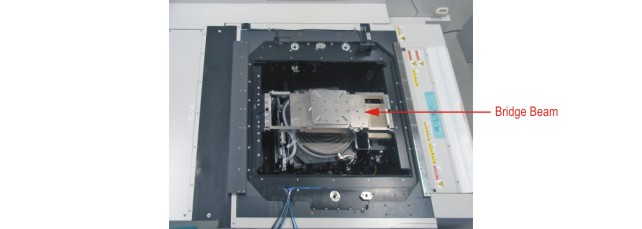

Interfacing the test system to Accretech UF3000 EX wafer prober
This section takes you through the steps needed to interface the V93000 test system with the Accretech UF3000 EX wafer prober.
You need to:
- prepare the wafer prober for the installation of a special piece of hardware called the Direct Probe™ Bridge Beam
- install the Direct Probe™ Bridge Beam hardware in the wafer prober
- load a DUT board into the wafer prober.
The following figure shows the PSRF Bridge Beam installed on the Accretech UF3000 EX wafer prober. The prober chuck can be seen underneath the Bridge Beam.

Functional changes
- Introduced in SmarTest 7.4.1